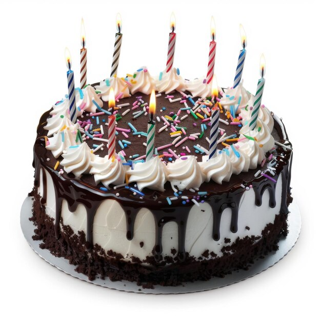

A Delicious Chocolate Cake

The rich and moist chocolate cake is perfect for any occasion.Wheter you're celebrating birthday or just craving something,this recepie is easy to follow and always a hit!
Ingredients
- 1 and 1/2 cup flour
- 1 cup sugar
- 1/2 cup cocoa powder
- 2 eggs
- 1 tsp baking soda
- 1/2 cup butter
- 1 cup milk
- 1 tsp vanilla extract
Instructions
- Preheat your oven to 350 F (175 C).
- In a large bowl,mix the dry ingredients
- Add the eggs ,butter and milk, and stirr until smooth.
- Pour the batter into a greased cake pan and bake for 30-35 minutes.
- Let the cake cool before serving.Enjoy!
For an extra touch, sprinkle some powdered sugaron top or add a dollop of whipped cream!
Leave a Comment
Name
Email
Comment
Looking for more delicious desserts? check out our Dessert Blog